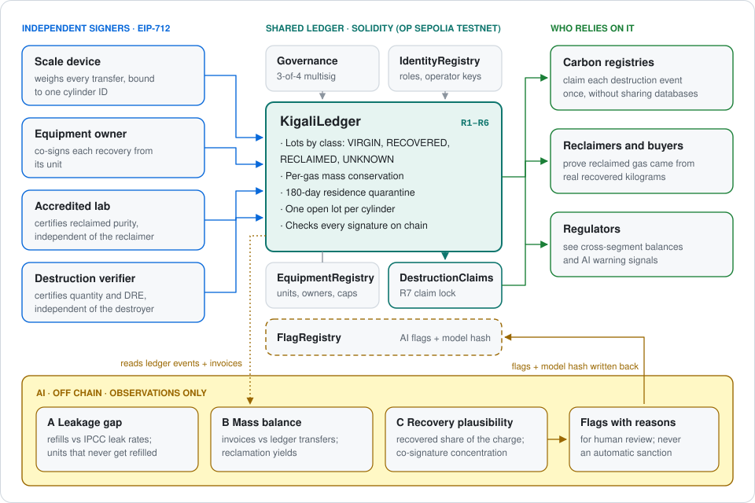
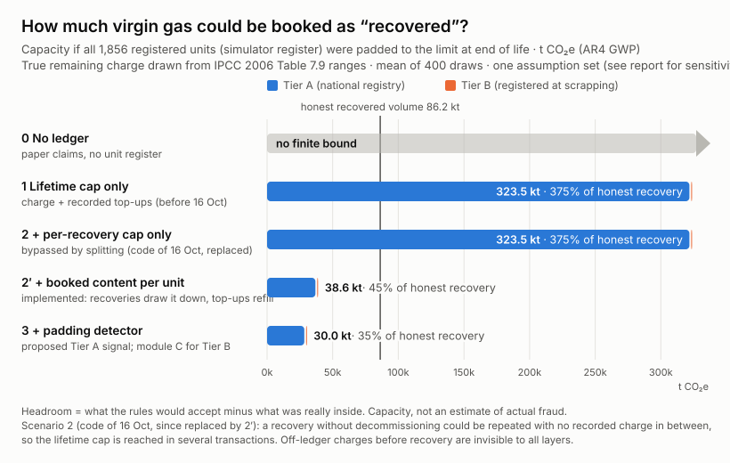
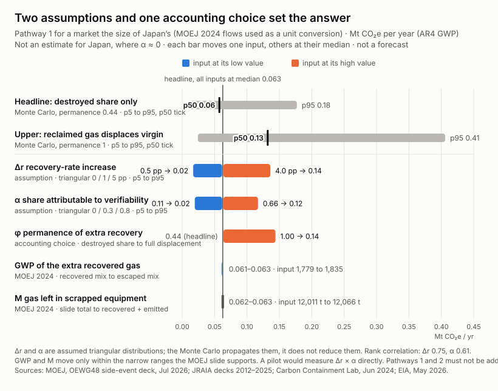

IEEE ClimateChain Global Hackathon 2026 · Track 3: Sustainable Supply Chains (also Track 1: Carbon Markets & Emissions Transparency) · Repository: github.com/ZhenYan1214/kigali-balance · All figures as of 2026-10-17
Sections follow the IEEE call: architecture and specification (A), security and data-integrity assessment (B), climate impact (C), adoption and roadmap (D), testing (E). The problem statement is pages 1–2. Every number comes from a script in the repository. A clean GitHub-hosted Linux machine rebuilds every generated file on every push and fails if any of them changes by one byte; python scripts/rebuild.py --full reproduces this locally.
Kigali Balance is a reconciliation layer between the systems that already record HFC kilograms. We audited 436 public ODS (ozone-depleting substance) and HFC destruction and reclamation projects at ACR, CAR and Verra:

KigaliLedger. Carbon registries, reclaimers, buyers and regulators rely on it. The AI modules read only ledger events and invoices, off chain, and write their flags back.| Layer | Responsibility | Not its responsibility |
|---|---|---|
| Physical anchors | Scale readings signed by a device key and bound to one cylinder ID; a co-signature by the unit's owner for each recovery; lab certificates (purity per AHRI 700); destruction certificates from a verifier independent of the facility | Seeing inside a cylinder. Collusion is not prevented, but it needs a second accountable signer. |
| Shared ledger (6 contracts, Solidity 0.8.28) | Per-gas mass conservation; provenance classes that cannot be swapped; booked content per unit; quarantine of recently charged and undocumented gas; one claim per destruction event | Gas that never enters it |
| AI (Python, off chain) | Flags what is compliant but implausible, with reasons a reviewer can read; writes each flag to FlagRegistry with model and input hashes | Sanctions. A flag is a reason to look, never a finding. |
VIRGIN: minted against a quota document.RECOVERED: from a registered unit.RECLAIMED: made only from recovered lots.UNKNOWN: legacy stock. Only the quota authority can register it. It is never reclaimed or credited, even after being charged into equipment: the lot that holds it when it comes back out stays marked through every later charge, recovery and split.In ISO 22095:2020 chain-of-custody terms, this is the segregated model, not mass balance. Reclamation may blend recovered lots with each other, but virgin or unknown gas can never be mixed in. A mass-balance model would let a reclaimer sell “reclaimed” kilograms against an average, which is exactly the loophole the system closes. This positioning is based on published summaries of the standard [6].
| Rule | What it enforces | Error on violation | Tests |
|---|---|---|---|
| R1 | Virgin lots only against a registered quota document, never above it. Undocumented (UNKNOWN) stock only by the quota authority. | QuotaExceeded, NotRole | Ledger.t.sol R1 ×5; EdgeCases.t.sol; invariant quotaNeverExceeded |
| R2 | Two-step transfer. The receiver re-weighs on its own signed scale. Every shortfall is booked as loss, and a shortfall above 1% is also flagged. Mass can never grow in transit. A revoked operator's lots are frozen. | Flags UNDERWEIGHT_ON_RECEIPT, OVERWEIGHT_ON_RECEIPT; NotOperator | R2 ×9; RedTeam.t.sol F7 |
| R3 |
| RecoveryExceedsContent, NotUnitOwner, OwnerNotIndependent, ServiceNotAuthorized | Equipment.t.sol 19; Provenance.t.sol consent ×8; Laundering.t.sol 10; RedTeam.t.sol F1 ×2, F2 ×2, F3, F5, F8, F12 ×2; 3 invariants |
| R4 | Reclaimed output ≤ recovered input × (1 − 2% minimum loss); purity ≥ 99.5%, signed by an independent lab over a subject that names the reclaimer, its exact inputs and the output cylinder | ReclaimExceedsInput, WrongSubject | R4 ×5; RedTeam.t.sol F4 |
| R5 | Only non-Tier-C RECOVERED lots enter reclamation | ClassNotReclaimable, TierNotReclaimable | R5 ×3; invariant reclaimedOnlyFromRecovered |
| R6 | Destroyed grams and DRE ≥ 99.99% are signed by a verifier independent of the facility. An event is credit-eligible only if every input is non-Tier-C RECOVERED. | NotVerifier, VerifierNotIndependent | R6 ×6, verifier ×5; 2 invariants |
| R7 | Claim lock: the destruction facility designates one registry, which can claim the event once. The facility can re-designate until the event is claimed. A registry can refuse Tier B inputs. | AlreadyClaimed, NotDesignated, TierNotAccepted | Claims.t.sol 8; RedTeam.t.sol F10 ×2; invariant claimedAtMostOnce |
| Cylinder | One open lot per cylinder ID | CylinderInUse | Provenance.t.sol ×6 |
Why a claim lock and not a shared fingerprint. An earlier design had registries compare hashes of event data, but changing any field of a certificate changes the hash. The claim lock makes the destruction event itself ledger state.
All off-chain evidence enters as EIP-712 typed data signed with secp256k1 and verified in the contract (Attestations.sol).
s signatures are rejected.| Type | Fields | Signed by |
|---|---|---|
ScaleReading | subject (what was weighed, e.g. recovery of unit X into cylinder Y), grams, timestamp, nonce | The operator's bound scale |
RecoveryConsent | equipmentId, cylinderId, service company, grams (must equal the reading), decommission flag, timestamp, nonce | The unit's registered owner, independent of the service company |
LabCertificate | subject (the reclaimer, its exact input lots and the output cylinder), gas, purity (bps), sampleId, timestamp, nonce | An accredited lab, independent of the reclaimer |
DestructionCertificate | subject (the exact input lots), grams (must equal intake), DRE (bps), documentHash, timestamp, nonce | A verifier, independent of the facility |
The modules read only what a regulator could observe: ledger events, the equipment register, the actor list and invoices. The simulator's ground truth is used only to score them; a test parses the source code to prove that no module opens it.
FlagRegistry and reads it back. It recomputes the input hash independently from the replayed files. Only a regulator can close a flag.| Module (36 months) | Signals | Precision | Honest flagged | Naive caught | Adaptive caught | Fraud in sample |
|---|---|---|---|---|---|---|
| A · Leakage gap: are a company's top-ups plausible for its registered units? | Purchases with no ledger receipt; top-ups vs IPCC leak rates (peer robust z); silent units | 0.97 | 0.5% | 100% | 5% (3/60) | 20% |
| B · Mass balance: do sales and yields match inflows? | Gram-level invoice-to-shipment matching; attempts above the 98% yield cap; yield percentile. An Isolation Forest only re-ranks; it changes no flag. | 1.00 | 0% (0/100) | 100% | 0% | 44% |
| C · Recovery plausibility: do a company's Tier B recoveries look real? | Share of near-full recoveries; volume vs registered fleet (quasi-Poisson); who co-signs for whom | 0.98 | 0.1% | 100% | 35% (7/20) | 7% |
How to read these numbers.
| Standard or rule | How Kigali Balance relates |
|---|---|
| EU 2024/573 (F-gas) |
|
| US 40 CFR 82 and 84 (EPA) | Reclaimers already report input and output per gas, with an annual audit: the single-jurisdiction precedent for R4 |
| Isometric HFC & ODS protocol v1.0; Verra VM0016 v2.0 | Per-container weighing, sampling and DRE ≥ 99.99% became the destruction-certificate fields and R6 |
| ISO 22095:2020 | Chain-of-custody model: segregated (A.3) |
| GS1 EPCIS 2.0 | Export implemented: every lot's provenance chain exports to an EPCIS 2.0 JSON-LD document that validates against GS1's official 2.0.1 JSON Schema (1,282 lots, 15,327 events) and reconciles gram for gram with the ledger (simulator/epcis/; the passport links each example). Shipping and receiving are ObjectEvents; charging and recovery are AggregationEvents with the unit as parent; reclamation is a TransformationEvent (many inputs, one output, matching R4). Class, tier, designation and the claim lock sit in a namespaced extension, because CBV has no term for reclamation or credit claims. Import from national systems is roadmap work. |
| W3C Verifiable Credentials 2.0, DID | Roles and device credentials; their hashes are stored in IdentityRegistry |
| AHRI 700 | Purity floor for reclaimed gas (R4) |
| IEEE 3218-2022 (blockchain for carbon trading) | Overlap: the claim lock supplies the cross-registry uniqueness function. A clause-by-clause mapping is roadmap work. |
| CAD Trust | Aggregates unit metadata across registries; it does not see kilograms, containers or destruction events. The claim lock's event ID can be attached to a CAD Trust unit record. |
| Paris Agreement Art. 6; Japan's JCM | Corresponding adjustments between countries. The claim lock prevents double issuance among registries that use it. It does not address double claiming between a credit buyer and a host country's NDC, or Montreal Protocol accounting of destroyed amounts. |
| EU ESPR digital product passport | The provenance passport follows the per-item passport pattern (a QR code to a verifiable history). No conformance is claimed. |
Gas measured by Foundry on the demo scenario (a successful call):
| Operation | Gas | Operation | Gas | Operation | Gas |
|---|---|---|---|---|---|
| Register Tier A unit | 172,648 | Send (split) | 158,428 | Reclaim | 345,136 |
| Mint virgin lot | 248,489 | Receive and re-weigh | 89,322 | Destroy | 264,609 |
| Charge into unit | 102,721 | Recover (2 signatures) | 324,546 | Registry claim | 102,524 |
Cost. One recovered cylinder's full path (recover, send, receive, reclaim or destroy, claim) is about 1.0–1.5 million gas. At OP Mainnet prices read on 2026-10-17, that is under one US cent per cylinder:
Capacity. Take a deliberately pessimistic case: all 12,066 t of HFC left in equipment scrapped in Japan in 2024, recovered 1 kg at a time. That is about 0.6 million gas per second, under 3% of OP Mainnet's 20 million.
Size. KigaliLedger is 19.1 KB, under the 24 KB limit but too large for a single transaction under Ethereum Sepolia's per-transaction gas cap. Splitting it into contracts below about 10 KB is on the roadmap.
Assets.
What the ledger does not assume: that any single participant is honest, or that any submitted data is true.
What it does assume:
Adversaries:
Numbering follows the project plan and the comments in the code. Findings of the outside red-team review (B.3) are marked fixed where the contracts were changed.
| # | Threat | Control | Evidence | Residual risk |
|---|---|---|---|---|
| T1 | Fake unit registered to “recover” virgin gas | Tier A from the national register. Tier B by photo (one photo, one unit; fixed) and model charge, under a monthly cap. Owner co-signature. AI module C. | Equipment.t.sol; test_F8_onePhotoRegistersOneUnit; module C (A.6) | Collusion with a take-back point, bounded per unit. “One photo” compares only a hash, so a re-shot photo of the same unit passes; the model charge and module C remain the check. Several addresses multiply the monthly cap. A service company can register a Tier B unit under any unused ID. |
| T2 | Tampered scale reading | Device keys bound to an operator; the receiver re-weighs on its own scale; consent and certificate grams must equal the reading | test_sec_revert_* ×9 (unregistered device, replay, other subject, tampered weight, expired, future, revoked, high-s, other deployment) | Both parties to a transfer colluding. A scale manipulated before it signs (needs a secure element and a calibration certificate). Under-reporting each receipt by up to 1% goes unflagged. |
| T3 | Forged or reused lab report | The lab is independent of the reclaimer. The certificate's subject names the reclaimer, its inputs and the output cylinder, so a certificate cannot be reused by another reclaimer (fixed). | test_R4_revert_reclaimerCannotCertifyItself, test_F4_labCertificateCannotBeReusedByAnotherReclaimer | A dishonest lab |
| T4 | Inflated recovery or reclamation | R3 and R4 caps; modules B and C | R3/R4 tests; invariants | Yield inflation inside honest variation (adaptive reclaimers: 0% caught) |
| T5 | One destruction credited by two registries, or claimed first by a rogue registry key | R7 claim lock; only the registry the facility designates can claim (fixed) | Invariant claimedAtMostOnce; Claims.t.sol; test_F10_* ×2; 4 rogue claims blocked in the seed-42 simulation | A registry that does not use the ledger; a facility colluding with a registry. Host-country and Montreal accounting are out of scope (A.7). |
| T6 | Stolen or lost participant key | Revocation through governance immediately stops the key's signatures and freezes the operator's lots (fixed). A revoked owner or facility key can no longer hand over a unit, change its service company or designate a registry (fixed, second review). A unit's owner can hand it over, and governance can reassign a lost owner or designate for a facility that lost its key (fixed). Nonces; 7-day attestation validity. | test_sec_revert_revokedDeviceStopsImmediately, test_H1_revert_revokedOwnerCannotConsent, test_F7_*, test_F12_* ×2, test_S2_* ×2 | Records made before revocation need manual review. A lot already in transit when its sender is revoked can still be received. |
| T7 | Tampered data imported from national systems | Only signed exports, with the source hash recorded (design) | — | Import is not built; a source system's own errors |
| T8 | Commercial volumes visible to competitors | Documents off chain, hashes on chain | — | Lot grams are visible to consortium members (B.5) |
| T9 | Smart-contract bug | 162 unit tests, 10 fuzzed invariants, differential replay, Slither in CI, manual red-team review | B.3 | Unknown bugs; a third-party audit is needed before production |
| T10 | Governance captured by one bloc, or stalled by a lost key | 3-of-4 multisig across stakeholder groups; no single seat can grant roles. A lost or compromised seat is rotated by the other members, which voids every open proposal; proposals expire after 30 days; approvals can be withdrawn; the contract can never hold a seat, and a call to an address without code is rejected (fixed). Parameters have floors, so governance cannot switch a rule off (e.g. a residence period of zero). | Governance.t.sol 21, including test_F11_* ×5, test_S4, test_S5; test_S6 | On the testnet one person holds all four seats. Losing 2 of 4 keys at once still halts governance. No timelock. |
| T11 | Personal data (GDPR, KVKK) | Technicians appear only as pseudonymous addresses; identifying data stays off chain | — | Cross-border transfer rules need per-country review |
| T12 | Signature scheme broken by a quantum computer | Verification isolated in one library; migration path in B.6 | — | Not implemented |
| T13 | Laundering by charging gas into a unit and recovering it | 180-day quarantine. Undocumented gas stays Tier C for good, and only the quota authority can register it (fixed, High). The lot it comes out in stays marked, so charging that lot back and waiting cannot reset the mark (fixed, High, second review). Tier A units must have an installation date (fixed). | Laundering.t.sol 10; test_F1_* ×2; test_S1_* ×2; test_S3; test_revert_operatorCannotDeclareUnknown | Off-ledger charging of smuggled gas into a nearly empty unit, then a genuine recovery. No false signature is needed; it is bounded only by booked content (B.4), and only inspection or module A can see it. |
| T14 | Recovery recorded without the owner | Owner co-signature naming service company, grams and cylinder | Invariant noRecoveryWithoutOwnerConsent; 23 blocked in the seed-42 simulation | Owner and technician colluding |
| T15 | Facility certifying its own destruction | Independent verifier certificate | Invariant noSelfCertifiedDestruction | Facility and verifier colluding |
| T16 | Padding: recovering more than a unit holds, at once or split over several recoveries | Booked content (R3) | Invariant noRecoveryAboveBookedContent | Padding up to one charge (B.4) |
| T17 | Griefing and denial of service | Only a unit's service company of record can charge it, so a competitor cannot quarantine someone else's recovery (fixed). One charge record per day bounds the residence check (fixed). Saturating arithmetic: an absurd charge can no longer lock a unit (fixed). | test_F2_* ×2, test_F5_floodOfChargesStaysCheap, test_F3_absurdChargeCannotLockAUnit; 7 competitor charges blocked in the seed-42 simulation | Cylinder IDs can be squatted by splitting a lot into a victim's ID. |
| Method | What it checks | Result |
|---|---|---|
| Unit tests (Foundry) | Each rule, each signature attack, the six-step demo, and the red-team proofs of concept turned into regression tests | 162 passing |
| Fuzzed invariants (CI: 128 runs × 64 steps; deep profile: 256 × 128, run locally) | Ten properties, including conservation, claims at most once, and no recovery without consent or above booked content | 10 holding. A deep campaign makes thousands of attempts per property, none of which succeeds. The counts include attempts that revert for other reasons, and the attacks come from a narrow set of keys. |
| Differential test | A simulated three-year market with twelve kinds of injected fraud (7,359 events) is replayed against the compiled contracts on a local chain. Every accept or reject, error name, lot ID and gas total must match the simulator's separately written JavaScript rule mirror. | 7,359 / 7,359 match; then 9 AI flags are written to FlagRegistry and read back. The mirror covers the calls the simulator makes; it does not cover legacy-stock declarations, rejections, device binding or parameter changes. |
| Static analysis (Slither 0.11.6, 102 detectors) | Known vulnerability patterns | 0 High, 0 Medium; 17 Low and 5 Informational triaged in docs/security/static-analysis.md |
| Outside security reviews (2026-10-17, two independent rounds) | Pre-audit reviews that checked every security claim in this annex against the code and tried to break the rules with proof-of-concept tests. The second reviewer was given the fixed code and no findings from the first. |
test/RedTeam.t.sol). The simulator also injects the new attacks (a competitor's charge, a rogue registry claim), and the contracts reject them in the differential test. The remaining Low findings are listed above as residual risks. That a fix of ours was itself bypassable is why a third-party audit remains a precondition for production. |
| Clean-room reproduction (CI) | Everything rebuilt from scratch on a fresh Linux machine on every push | Passing; every committed generated file is byte-identical (PDFs excepted) |
| Live deployment | The six contracts on OP Sepolia, verified on the block explorer; the demo run on chain | 142 transactions, none failed (2026-10-16). This build predates the booked-content rule and the red-team fixes. Its per-recovery cap can be bypassed by splitting recoveries (B.4). A redeploy is pending. |
Rules cannot stop two parties who agree to lie, so we measured how much room they leave. In the model, every registered unit in the simulated market (the October 16 simulator population, 1,856 units) is padded to the limit by a colluding technician and owner, with the charge really left in each unit drawn from the IPCC 2006 Table 7.9 end-of-life ranges. The rules would then accept as “recovered”:
Against a lifetime cap, the simplest rule a ledger could enforce, booked content removes 88% of the room. On a ledger only three years old, which has recorded few top-ups, it removes 57% (90.5 → 38.6 kt). A careful paper audit with a unit register would also apply roughly “one charge per unit”, so the gain over today's best practice is smaller. The gain is that the rule is enforced on every record, across organisations.
The rest cannot be closed by rules. Many honest units reach end of life far from full, so padding one to a full charge looks like an ordinary recovery. Off-ledger charging (T13) needs no false signature at all. That residue belongs to statistics and inspection.

Today, lot grams and holders are ledger state that every consortium member can read. That is acceptable for a regulator but not for competing reclaimers.
The production path follows crypto exchanges' proof of reserves, which already proves that totals add up without revealing balances. Commitments (Pedersen) replace plain grams, and the contract checks conservation homomorphically: the sum of input commitments equals the sum of outputs plus losses. Range proofs are mandatory (e.g. Bulletproofs): without them a negative hidden amount could create mass, the known weakness of commitment-only reserve proofs [9]. Regulators would hold viewing keys.
We have not built this; it is roadmap stage 2.
Every signature in the system is secp256k1 ECDSA, which a large quantum computer would break.
The design:
Attestations.sol). Next, move it behind a verifier contract, selected per key type and replaceable by governance, so a migration needs no redeploy of the ledger.Kigali Balance is an enabler. It recovers no gas and claims no credits; any reduction belongs first to whoever recovers, destroys or pays, and the project will never claim credits for its own role.
What follows propagates stated assumptions; it is not a forecast. The ranges follow from two assumed distributions and one accounting choice, and the Monte Carlo does not make them more certain. Code, inputs with sources, and a longer discussion: analysis/impact/.
The two pathways must not be added: they can count the same molecules twice.
Why Japan. We use Japan's 2024 flows only because Japan publishes an end-of-life mass balance [3]. They convert “one percentage point of recovery” into tonnes for a market of that size. This is not an estimate of impact in Japan: there, recovery is mandated and already tracked electronically, so the ledger would add almost nothing. We found no verifiable end-of-life mass balance for Türkiye or for any EU member state.
Formula. ΔE₁ = M × Δr × GWP × α × φ.
| Avoided emissions, MtCO₂e per year, market the size of Japan's | p5 | median | p95 | mean |
|---|---|---|---|---|
| Headline: destroyed share only (φ = 0.44) | 0.011 | 0.057 | 0.18 | 0.071 |
| Upper bound: reclaimed gas fully displaces virgin (φ = 1) | 0.024 | 0.13 | 0.41 | 0.16 |
What the median means. It corresponds to an attributable rise in recovery (Δr × α) of 0.6 percentage points. One attributable point is 121 t of gas a year in a market of this size: 0.10 MtCO₂e on the headline, 0.22 on the upper bound.
For scale. TEAP estimates that 250,000–400,000 t of ODS and HFCs are decommissioned worldwide each year [16]. That makes one attributable point worth 2,500–4,000 t of gas, 21–33 times a Japan-sized market. This is a ceiling, since the figure includes ODS and foams.

ΔE₂ = GWP × β per tonne blocked, where β is the share that would eventually have been emitted: triangular 0.57 / 0.72 / 0.95, anchored to Japan's 2024 flows.
| tCO₂e per tonne blocked (gross, lifetime) | GWP | p5 | median | p95 |
|---|---|---|---|---|
| R-404A | 3,922 | 2,450 | 2,910 | 3,470 |
| R-410A | 2,088 | 1,300 | 1,550 | 1,850 |
| R-134a | 1,430 | 890 | 1,060 | 1,260 |
Δr and α enter only as a product, so the stage-2 pilot measures Δr × α directly. It has three matched arms of scrapped units:
The outcome must be measured identically in every arm, independently of the ledger and of any paperwork, by a physical audit of a random sample of scrapped units; otherwise fraud inflates the paper arm. The same audit records destroyed versus reclaimed gas, which pins down φ.
Sample size. Assume a 43% baseline (two-sided 5%, power 80%), with clustering by technician (an illustrative design effect of 1.95). Detecting a 1-point difference then needs about 75,000 units per arm; 4 points, about 4,700. A pilot of a few thousand units can rule out the upper end but cannot measure the 0.6-point median. We say so now so that nobody reads a small pilot as proof.
The cut in launderable volume (B.4) is not itself an emission reduction. It is what makes paying for recovery, and therefore pathway 1, safe. HFC destruction crediting is only now opening (Verra VM0016 v2.0 in December 2025, Isometric, a Taiwanese draft methodology in 2026), which is why the safeguard matters now.
| Participant | Why join | Cost |
|---|---|---|
| Compliant reclaimers | “Verified reclaimed” separates their gas from virgin gas sold under the label, which today undercuts them | A fee per verified batch |
| Carbon registries and credit buyers | Cross-registry uniqueness at the kilogram level, without sharing databases | A fee per claim |
| Large buyers (supermarkets, rail, data centres) | Proof that “reclaimed” gas is reclaimed, while the EU servicing ban tightens toward 2030 | Free queries |
| Regulators | Cross-segment signals (closure gaps, AI flags) to target inspections | A data export |
| Technicians and equipment owners | Designed so that technicians add no paperwork: charges and recoveries would come from records they already file, and weighing becomes signing. Owners add one co-signature per recovery. | Signing scales are paid for by whoever earns the premium or the credit |
Türkiye first.
| Stage | When | Goal | Success measure |
|---|---|---|---|
| 0 · Hackathon | 2026-10 | End-to-end on simulated data; tests, invariants, threat model, red-team review; testnet | Done (this submission) |
| 1 · Validate demand | 2026-11 to 2027-03 | Interviews with reclaimers, a registry, a destruction operator and the Turkish ozone unit; usability tests of the passport; split the ledger below 10 KB; owner-authorised service companies; governance member rotation; a third-party audit | At least 2 of 4 demand hypotheses confirmed by practitioners |
| 2 · One destruction project | 2027 | Real cylinders through recover, destroy and claim with one operator and one registry; confidential amounts (B.5); the pilot in C.4 | One complete audited chain; Δr × α measured by physical audit |
| 3 · National pilot | 2027–2028 | Read-only connection to FARAVET and EKOMVET exports; a consortium chain run by the regulator, registries and industry | The regulator uses closure gaps to target inspections |
| 4 · Cross-border | 2028 onward | A second country and a second registry; a neutral governance body | Two jurisdictions, two registries, no single operator |
Scaling. Throughput is not the constraint (A.8). The constraints are onboarding signers (scales, labs, verifiers) and data import. Import uses GS1 EPCIS 2.0 so that existing systems publish events instead of people re-entering them.
We have not tested with real users, and we do not claim to have. What we did instead:
Beyond the limits in the problem statement (§7, §9):
docs/research/03-registry-audit.md; data with a source URL per row in research/registry-audit/.